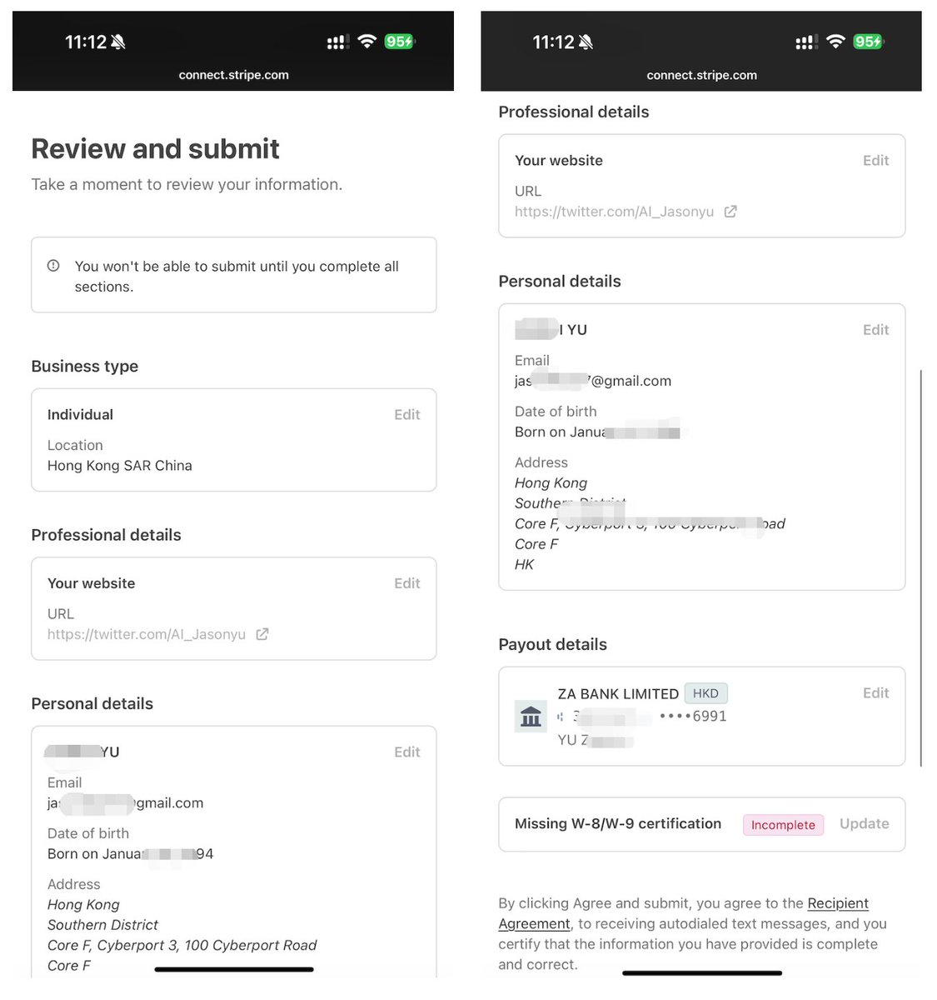
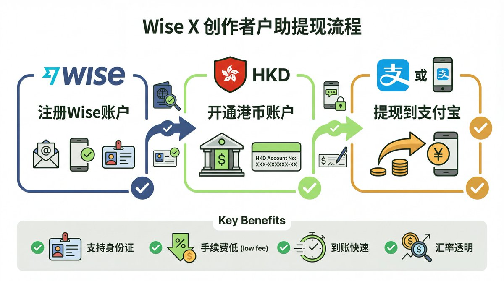
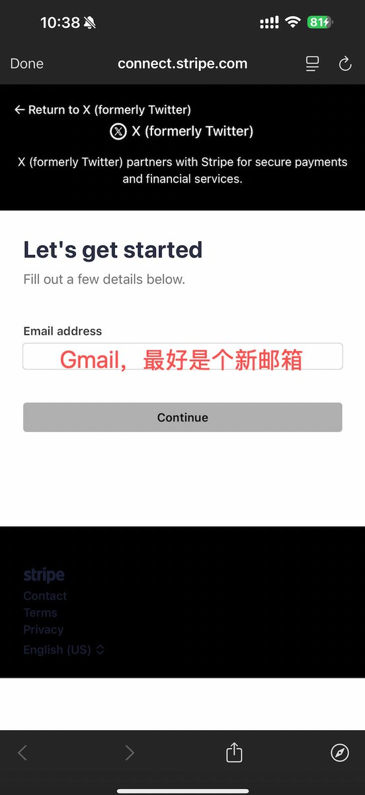
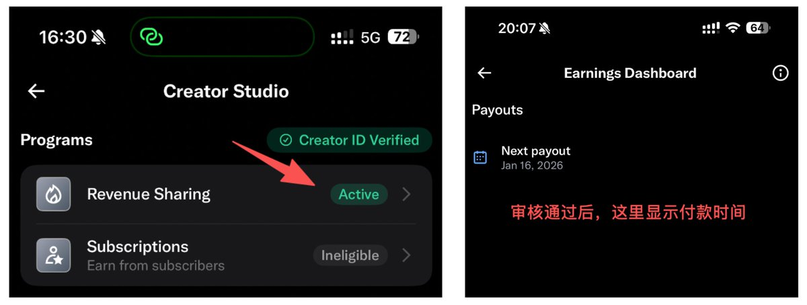
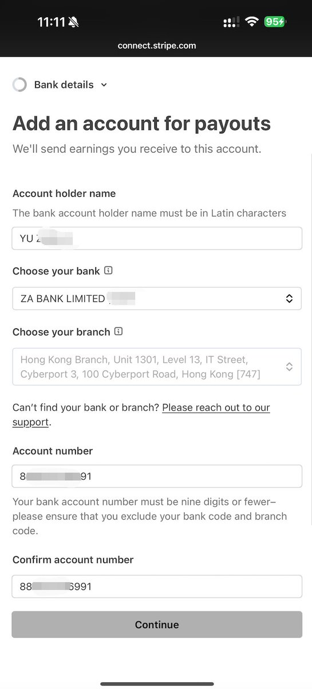

马斯克的工资越来越多了！ 这不是玩笑，只要你的 X 账号满足条件，每个月都能收到真金白银的美金——创作者收益。
目前我看到的中推的某些朋友，半个月的创作者收益甚至已经达到了 4000 美金。
比如看不懂的 SOL大哥、比如AB Kuai Dong ... ...

但我看到太多 X 友在设置过程中因为一个小细节就导致收款失败或延迟数周——明明所有步骤都做了，却卡在姓名不一致、地区选错、税务表格漏填这些看似微不足道的地方。
更让人沮丧的是，X的教程要么是 2025 年的旧版（政策已变），要么只讲大框架、大步骤，不讲细节，落地过程还是进行不下去，得找朋友去问。
我在开通之后，陆陆续续帮助了一些中推的朋友来开通和设置收款，这个过程中，我也收集了上百位 X 友的真实案例——成功的、失败的、被卡住的、被风控的，把所有坑都整理成了这篇保姆级教程。作为一个已经成功收款的创作者，我可以很自信地说：如果你未来想拿到马斯克的工资，这一篇是必看、必收藏的。
这不是一篇普通的教程，而是一份避坑指南+实战手册：
✅ 每一步都配有真实操作截图（我自己的收款流程）
✅ 标注了 10 个最容易出错的致命细节
✅ 整合了 15 个高频问题的解决方案
✅ 所有信息都基于 2026 年 2 月的最新政策
我的目标很简单：让每一个看完这篇文章的人，都能顺利拿到第一笔收益，一个坑都不踩。 建议先收藏，再按步骤操作，遇到问题随时回来查！
📋 开始前的准备清单
在正式设置之前，请确保你已经准备好以下材料：
必备材料
✅ 中国护照（强烈推荐）或大陆身份证
✅ 稳定的网络代理（美国或香港节点）
✅ 港卡或者Wise 账户（用于收款，支持大陆身份证注册）
✅ X Premium 订阅（蓝 V 认证）
前置条件
你的 X 账号需要满足以下条件才能开通创作者收益：
账号年龄 ≥ 3 个月
粉丝数 ≥ 500（互关粉丝也算，但有风险）
近 3 个月推文印象数 ≥ 500 万
账号已经通过了身份认证
第一步：完成 X 账号身份认证
这是整个流程中最关键的一步。2026 年的认证流程已经优化，大陆用户走 Stripe 通道可以快速通过，直接使用身份证即可，我就是这么认证的。
这个是我之前认证的推文：
https://x.com/AI_Jasonyu/status/2004438992151073203
操作步骤
1. 调整设备环境
将手机系统语言改为英语（美国）
将 X App 语言也改为 English (US)
连接美国节点的代理（这一步很重要！）
2. 进入认证入口
打开 X App，按以下路径操作：
个人头像 → 创作者工作室 → Verify your identity → 身份认证

3. 选择证件类型
系统会让你选择身份证明文件：
地区：选择中国【我选的】，香港、新加坡、美国也有几率通过，但是不稳，不符合大多数人。
选择：身份证 - 几分钟即可完成【我选的】，如果选香港，护照也是可以快速通过的
4. 上传证件照片
按照提示拍摄或上传：
分别拍照上传身份证正反面的照片，确保清晰没有反光
这里认证走 Stripe 通道（而不是 Persona），如果弹出的是 Persona 且一直过不了 → 把手机地区+语言改成美国再试
5. 自拍验证
系统会要求你进行人脸识别：
保持光线充足
按照提示转动头部
确保面部完整在框内
6. 等待审核
提交后通常 5-30 分钟内就能收到审核结果，通过后会收到通知。
第二步：注册并配置 Wise 账户【有港卡的可以直接略过这一步】
Wise 是目前大陆用户收款的最佳方案，支持身份证注册，手续费低，注册方便。
1、为什么选择 Wise?
✅ 支持大陆身份证注册（无需港澳通行证）
✅ 可以开通香港账户收款
✅ 直接提现到支付宝/微信/银联卡
✅ 汇率透明，手续费低
2、注册 Wise 账户
访问 Wise 官网注册个人账户，用下面的链接，可以免一部分手续费汇款额度。
https://wise.com/invite/ihpc/zhikuiy
邮箱建议使用 Gmail 邮箱
账户类型：选择"个人"
国家：选择"中国"
绑定手机号验证，使用+86 就可以
设置密码：字母+数字，不少于 9 位数
填写个人信息：注意姓名用拼音，名字和地址和身份证保持一致
开通账户身份证 + 人脸识别（重点）
添加美元和港元账户
3、开通香港（HKD）账户
在 Wise 后台：
添加余额 → 选择货币 → 港币(HKD) → 获取账户详情
系统会生成一个香港银行账户信息，包括：
账户号码（Account Number）
银行代码（Bank Code）
分行代码（Branch Code）
银行地址
4、Wise 账户养号建议
为了避免后续风控，建议：
注册时资金来源选"工资/薪水"
年收入选择较高档位（10 万+美元）
首次收到 X 收益后，留存 24 小时再提现
不要秒进秒出，保持一定余额
更详细的开通推荐去看的@MotongDAO 的置顶教程。
第三步：注册并配置 Stripe 账户【此次教程的核心】
Stripe 是 X 官方指定的收款通道，所有创作者收益都必须通过 Stripe 中转，在创作者中心使用的是 Stripe Express 的服务。
同样的，在申请创作者收益之前，把手机语言切换为英文，然后把 VPN 切换到美国。
1、进入 Stripe 设置
在 X App 中：
个人头像 → Revenue Sharing → Set up payments(配置付款信息) → Connect Stripe Account
点击后会自动跳转到 Stripe 注册页面。
2、填写 Stripe 账户信息
⚠️ 关键提醒：以下所有信息必须与 港卡 / Wise 账户完全一致！
1、输入邮箱
最好用全新邮箱（Gmail 最好）注册 Stripe 个人账户
如果你之前用这个卡申请过企业的，也不影响，X 的收益只是经过这个中转到你的卡里面而已。我用的是之前申请美国公司的 Stripe 账户，申请失败之后的一个账号，没影响。
2、输入手机号和验证码
手机号这里是可以绑定+86 的手机号的，但是保险起见，我绑定了一个香港的手机号。
输入手机号之后，需要接收一个验证码，填写之后就进入到下一步了。
如果你需要香港手机号，可以去看看我之前的这两个香港手机号的推文，注册一个备用。
https://x.com/AI_Jasonyu/status/2008172557233692753?s=20
https://x.com/AI_Jasonyu/status/2007432863525015973?s=20
3、创建一个新的企业

我的截图里面显示的有我这个账号之前在 Stripe 注册的一个主体，不过这个主体没申请通过，也就一直在这里放着（这个是一个公司的主体）
我们这里不用管，直接点击"Create a new business"就行，千万不要用自己的企业账号去收款，这个和你之前的认证是不一致的，必然有坑。
4、选择地区和账户类型
地区必须选择：Hong Kong（香港）
企业类型：选择 Individual（个人）
不要选美国或其他地区——如果你有 U 卡或者其他的卡，或者第二次认证，想要去提升创作者收益，你可以去尝试选择美国或者新加坡之类的。
5、填写个人信息【逐个给大家说明】
Legal first name：填写名，拼音连起来，用全大写填写【我用的众安，和众安的卡名字保持一致】
Legal last name：填写姓，也是全大写填写【我用的众安，和众安的卡名字保持一致】
出生日期：按护照的日期填写
6、填写地址 Home Address
大多数人应该都没有香港地址，所以可以直接使用 港卡/Wise 提供的银行地址：
在 Wise 后台查看 HKD 账户详情
复制银行地址（Bank Address）
粘贴到 Stripe 的地址栏
我使用的是众安的银行提供的地址，在 APP 可以看到，如果用 Wise 同理。
7、绑定银行账户
这里有个说明，目前 X 友最推荐的是汇丰香港，可以直接收美元，因为如果是众安，是自动转汇成港元的，有大约 2% 转汇费，我实际测试下来，和实时汇率对比应该也就 1% 的损耗。
如果你直接美元消费，可以选择汇丰试试，否则可以直接参考我的，使用众安没什么问题。
这一步是把你的香港账户绑定到 Stripe：
Account holder name：姓名的拼音，姓在前，名在后【全大写，也是保持和银行 APP 显示的一致即可】
Choose your bank【银行】：比如众安，就选择 ZA BANK LIMITED [387]，根据你自己的银行，下拉搜索就能找到
Choose your branch【支行】：自动带入，不用管
Account number【账户号码】：填写 众安/Wise 提供的 Account Number【填写完整，不要只填写 9 位】
Confirm account number【确认账户号码】：再填写一遍账户号码 Account Number
⚠️ 常见错误：
账号位数不对：账号的示例是 9 位数，不用管，按照你的真实账号输入就行，我的众安是 12 位，就全部填写进去就 OK 了
姓名不一致：Stripe 和 港卡/Wise 的姓名必须一模一样
地址格式错误：使用 港卡或者 Wise 提供的标准地址格式
第四步：确认信息并填写税务表格（W-8BEN）
1、首先得确认下之前填写的信息
Business type 确认这里就是之前填写的，确保没错
Your website：这里是你自己的 X 的主页链接
Personal details：检查确认无误
Payout details：这里如果填写错了，还能点击 Edit 来编辑
2、W-8/W-9 税收协定
这是美国税务要求，必须填写才能减少预扣税，如果不填写，应该会直接扣 30%，填写后应该是 10%
这里直接点击 Update 更新。
🔔 填写要点
1、税务居民身份
Are you considered a U. S. Person for Federal Tax Purposes?
选择：非美国税务居民（Non-US tax resident），也就是选择"No"
2、邮寄地址
Is your mailing address the same as the permanent residence address above?
您的邮寄地址是否与上述永久居住地址相同？————选择 Yes 就行。
3、美国纳税人识别号码
U. S. Taxpayer ldentification number
为空就行，我们都没有
4、非美国纳税人识别号码

Non-U. S. Taxpayer ldentification number
有护照的填写护照号码，没有护照的填写身份证号码【最好填上，我自己没填，也可以下一步】
5、税收协定索赔
Tax Treaty Claims，这个选"No"即可。
6、然后勾选同意选框，在 Signature 中填写你的英文全名。
注意，这里的英文名字要和刚才确认信息页面的名字顺序一致，我这里前面的时候，就变成了，名在前，姓在后！！
确认后，回到Review页面。
7、然后点击"Agree and submit"，等待审核即可。
第五步：等待审核与首次收款

1、Stripe 审核时间
提交所有信息后，Stripe 会进行审核：
通常时间：几小时到 2-3 天
审核内容：身份信息、银行账户、业务合规性
审核通过后，你会在 X 的 创作者工作室，Revenue Sharing 页面看到"Active"状态。
2、收益发放规则
发放门槛：累计收益达到$30 美元
发放时间：每月两次自动发放，也就是每 2 周发放一次（通常是 17 号、31 号）
到账时间：
X → Stripe：即时
Stripe → 港卡/Wise：2-7 个工作日
Wise → 支付宝/微信：几分钟到账
3、如果是 Wise 首次收款注意事项
Wise 风控审核
首次大额入账（X 收益）会触发 Wise 的审核，这是正常现象：
提前准备说明
资金来源：填写"X platform creator revenue"或"社交媒体广告分成"
职业：填写"自由职业者"或"内容创作者"
养号策略
收到款项后，留存 24-48 小时再提现
不要秒进秒出，避免触发风控
保持账户有少量余额（几百 HKD 即可）
审核时长
通常 24-72 小时
如果被冻结，邮件客服提供 X 收益截图即可解冻
提现到国内
Wise 收到款项后，可以直接提现到：
推荐方式：支付宝
手续费最低
到账速度快（几分钟）
汇率透明
操作步骤：
Wise后台 → 选择人民币CNY → 汇款 → 添加收款人 → 选择人民币 → 选择电子钱包 → 选择我本人 → 选择支付宝 → 输入电话号码 → 点击继续 → 输入金额
⚠️ 注意：
首次提现免手续费（一定要一次提完）
后续提现有固定+百分比手续费
🚨 以下内容也是必看，看了提前避坑。
根据大量 X 友的反馈，我总结了最常见的错误：
1. 姓名不一致
❌ X 认证用中文名，Stripe 用英文名，Wise 用拼音
✅ 三个平台的英文名必须完全一致
2. 地区选错
❌ Stripe 选了美国或其他地区
✅ 必须选 Hong Kong
3. 没有改 Wise 姓名
❌ Wise 注册时用了中文名或默认姓名
✅ 开户后立即联系客服改成护照英文全拼
4. 税务表格没填或填错
❌ 不填表格，默认扣 30% 税
✅ 正确填写 W-8BEN，勾选税收协定，只扣 10%
5. 网络环境不对
❌ 用国内 IP 或不稳定节点
✅ 全程使用美国或香港稳定节点
6. 语言设置错误
❌ 手机和 App 都是中文
✅ 改成英语（美国），走 Stripe 通道
7. 银行账户信息填错
❌ 账号位数不对，代码填反
✅ 完全按照 港卡和Wise 提供的信息填写，不用顾忌那个9位的参考
8. 首次秒提现
❌ Wise 收到钱立刻全部提走
✅ 留存 24 小时，养号避免风控
9. 互关刷粉丝
❌ 为了凑 500 粉丝大量互关
✅ 有封号风险，影响收益发放，会延迟
10. 没有绑定 Stripe 就等收益
❌ 以为达标了就会自动发钱
✅ 必须完成 Stripe 绑定，收益才会累计发放
❓ 我收集的常见问题解答
Q1: Stripe 地区选错了怎么办？
A: Stripe 地区一旦选定无法自己修改。需要私信 X 官方 @premium，转人工客服解绑，并提供新地区的住宅证明（如水电单）。建议一开始就选对，避免麻烦。
可以看鱼仔的这个推文
https://x.com/ExpLang_Cn/status/2020841732158464262?s=20
Q2: 大陆身份证能通过认证吗？
A: 可以！但必须走 Stripe 通道（非 Persona）:
使用美国 VPN
手机和 X App 语言改成英文
从 Creator Studio → Monetization → ID Verification 入口进入
大陆身份证或护照均可，几分钟通过
Q3: 没有港卡，Wise 行吗？
A: 可以！Wise 港币账户是目前除港卡外最主流的方案：
大陆身份证就能注册
开通 Wise HKD 账户
绑定到 Stripe
关键：姓名必须与护照/Wise 一致（联系客服改成护照拼音）
Q4: 收款失败/没到账常见原因？
A: 检查以下几点：
Wise 地址填错（使用 Wise 提供的银行地址）
账号位数不对（有些银行要 12 位，不足补 0）
姓名/地址不一致
IP 不稳定/没用香港或美国节点
没有完成 Stripe 绑定
Q5: Wise 港币账户开通慢/被拒怎么办？
A: 关键点：
注册时姓名用护照拼音（不要中文）
资金来源选"工资/薪水"
年收入选最高档（10 万+美元）
被拒可重新注册新账户，或邮件客服申诉（提供身份证/护照扫描件）
2026 年审核更严，建议提前 1-2 个月准备
Q6: Wise 收款后资金被冻结怎么办？
A: 首次大额容易触发风控，冻结 24-72 小时：
原因：频率太高、秒提、余额为 0
解决：留存资金至少 24 小时，一周提现 1-2 次，养号留点余额
提前准备：资金来源填"社交媒体收入"
冻结后：邮件客服，提供 X 收益截图解释
Q7: Wise 提现到支付宝，手续费高怎么办？
A:
首次提现免手续费（一定要一次全提完）
后续收固定+百分比费
支付宝最便宜（手续费低、到账快），微信贵
别直接提银行卡（费更高、慢）
Q8: Stripe 港区激活失败/卡在审核？
A: 关键检查：
所有姓名/地址必须 100% 一致（Wise 改成护照拼音）
业务类型选"个人/个体户"
描述填"Social media content creator"
用美国/香港稳定节点，App 语言英文
失败重试或换新 Stripe 账号（需 @premium 解绑旧的）
Q9: 收益达标了但不显示/不发放？
A:
必须完成 Stripe 绑定+身份认证，收益才会进入"待发放"
互关刷粉丝/曝光被检测，会延迟或扣除收益
检查 Monetization 页面是否有"Pending"状态
达 $30 门槛后自动每月发放
Q10: W-8BEN 税务表格填错能改吗？
A: 可以改！
填错（如没勾税收协定）默认扣 30%，正确填可减到 10%
Stripe 后台重新提交新表格（旧的自动覆盖）
TIN 必填护照号
中国大陆选"Hong Kong treaty"协定（港区账号适用）
Q11: 一个 Wise/Stripe 能绑多个 X 账号吗？
A: 理论可以，但风险高（容易关联封号）。官方建议一账号一 Stripe。多人合用 Wise 也容易风控。安全起见，用不同身份证/护照开多个 Wise。
Q12: 账号被限流，影响收益吗？
A: 会！曝光掉，印象数少，直接影响广告分成。
原因：频繁互关、刷粉、发敏感词
解决：原创内容为主，避开敏感话题，慢慢养号
被限流后收益可能清零或延迟
Q13: 中国大陆需要申报 X 收益个税吗？
A:
个人年收入超 12 万需自行申报"特许权使用费"或"偶然所得"（税率 20% 可抵扣）
银行/Wise 大额不会直接上报 X 细节
但超 5 万美金等值可能触发反洗钱问询
建议分散提现、记录流水备查
Q14: 汇丰和众安港卡哪个好？
A:
推荐汇丰：可以设置保留美元结算，避免 2% 换汇手续费（实测1%）
不推荐众安： Stripe 绑定众安会自动换汇为港币，每笔损失 1%"非本地货币结算费"
Wise：手续费低，操作最简单，大陆身份证即可，但是到账很麻烦，遇到问题较多
Q15: 收益多久到账？
A:
Stripe 审核：几小时到几天
首次提现：7-14 天（官方延迟）
后续提现：2-7 工作日
Wise 首次大额：会额外审核（留存 24 小时再提）
🎯 总结：成功收款的 3 个关键
经过上面的详细讲解，你应该已经掌握了整个流程。最后再强调 3 个最关键的点：
1、一致性是生命线
X 认证名、Stripe 名、Wise 名，三者英文拼写必须完全一致！这是 90% 失败案例的根本原因。
2、 提前布局
审核有随机性，建议在收益达标前 1-2 个月就开始准备账户，避免到时候手忙脚乱。
3、 养号意识
无论是 X 账号还是 Wise 账号，都需要"养":
X：原创内容为主，避免刷粉
Wise：首次收款留存 24 小时，保持少量余额
📢 最后
这套方案适合绝大多数的大陆创作者，成功率在 95% 以上。我自己就是按照这个流程成功收到了第一笔创作者收益。
如果你在操作过程中遇到任何问题，欢迎在评论区留言，我会尽量帮大家解答。也欢迎已经成功收款的朋友分享你的经验！
最后，祝大家收益稳定，早日实现"X 暴富"！ 💰
觉得有帮助的话，请❤️点赞、🔁转发，让更多 X 友少走弯路！ 🙏
マスクの給料がどんどん増えている！これは冗談ではありません。あなたのXアカウントが条件を満たせば、毎月本物のドル——クリエイター収益を受け取ることができます。
現在、私が見ている中国人クリエイターの中には、半月のクリエイター収益がすでに4000ドルに達している人もいます。
例えば、SOL大哥やAB Kuai Dongなど…
しかし、私はあまりにも多くのXユーザーが設定プロセスの中で、たった一つの小さなミスで入金失敗や数週間の遅延に直面するのを見てきました。すべての手順を踏んでいるのに、名前の不一致、地域の選択ミス、税務フォームの記入漏れといった、一見些細なところでつまずいてしまうのです。
さらに困るのは、Xのチュートリアルが2025年の古いバージョン（ポリシーが変更されている）だったり、大枠や大きな手順だけを説明して詳細を省いているため、実際の作業が進められず、結局友人に聞かなければならないことです。
私は開通後、徐々に中国人クリエイターの友人たちの開通と入金設定を手伝ってきました。その過程で、100人以上のXユーザーの実際のケース——成功、失敗、行き詰まり、リスク管理検知——を収集し、すべての落とし穴をこの完全ガイドにまとめました。すでに入金を受け取っているクリエイターとして、自信を持って言えます：将来マスクの給料を受け取りたいなら、この記事は必読かつ必ずブックマークすべきです。
これは普通のチュートリアルではなく、落とし穴回避ガイド＋実践マニュアルです：
✅ 各ステップに実際の操作スクリーンショット付き（私自身の入金フロー）
✅ 最もミスしやすい10の致命的なポイントを明記
✅ 15のよくある質問と解決策を集約
✅ すべての情報は2026年2月の最新ポリシーに基づく
私の目標はシンプルです：この記事を読んだすべての人が、最初の収益をスムーズに受け取り、一つも落とし穴にハマらないこと。まずブックマークしてから手順通りに操作し、問題が発生したらいつでも戻って確認することをおすすめします！
📋 始める前の準備チェックリスト
正式な設定の前に、以下のものを準備してください：
必須材料
✅ 中国パスポート（強く推奨）または中国本土の身分証明書
✅ 安定したネットワークプロキシ（米国または香港ノード）
✅ 香港の銀行カードまたはWiseアカウント（入金用、中国本土の身分証明書で登録可能）
✅ X Premium サブスクリプション（青バッジ認証）
前提条件
Xアカウントが以下の条件を満たすことで、クリエイター収益を開通できます：
アカウント年齢 3ヶ月以上
フォロワー数 500以上（相互フォローもカウントされるがリスクあり）
直近3ヶ月のツイートインプレッション数 500万以上
アカウントの本人確認が完了していること
ステップ1：Xアカウントの本人確認を完了する
これは全プロセスの中で最も重要なステップです。2026年の認証フローは最適化されており、中国本土のユーザーはStripe経由で迅速に通過できます。身分証明書を直接使用すればよく、私もこの方法で認証しました。
こちらが私が以前認証したツイートです：
https://x.com/AI_Jasonyu/status/2004438992151073203
操作手順
1. デバイス環境の調整
スマートフォンのシステム言語を英語（米国）に変更
Xアプリの言語も English (US) に変更
米国ノードのプロキシに接続（このステップは非常に重要！）
2. 認証入口へのアクセス
Xアプリを開き、以下のパスで操作します：
プロフィールアイコン → クリエイタースタジオ → Verify your identity → 本人確認
3. 証明書タイプの選択
システムが身分証明書を選択するよう求めます：
地域：中国を選択【私が選択】、香港・シンガポール・米国も通過する可能性はあるが安定せず、大多数の人には不向き。
選択：身分証明書 - 数分で完了可能【私が選択】、香港を選ぶ場合、パスポートでも迅速に通過可能
4. 証明書写真のアップロード
指示に従って撮影またはアップロード：
身分証明書の表面と裏面の写真をそれぞれ撮影してアップロード。鮮明で反射がないことを確認してください。
ここでの認証はStripe経由（Personaではありません）。Personaが表示されて通過できない場合 → スマートフォンの地域＋言語を米国に変更して再試行
5. セルフィー認証
システムが顔認証を要求します：
十分な明るさを確保
指示に従って頭を回転
顔全体が枠内に収まっていることを確認
6. 審査待ち
提出後、通常5〜30分以内に審査結果が届きます。通過すると通知が届きます。
ステップ2：Wiseアカウントの登録と設定【香港の銀行カードをお持ちの方はこのステップをスキップ可】
Wiseは現在、中国本土ユーザーの入金に最適なソリューションです。身分証明書で登録可能、手数料が安く、登録も簡単です。
1、なぜWiseを選ぶのか？
✅ 中国本土の身分証明書で登録可能（港澳通行証不要）
✅ 香港口座を開設して入金可能
✅ Alipay/WeChat/銀聯カードに直接出金可能
✅ 為替レートが透明で手数料が安い
2、Wiseアカウントの登録
Wise公式サイトにアクセスして個人アカウントを登録。下記のリンクを使用すると、一部の送金手数料が免除されます。
https://wise.com/invite/ihpc/zhikuiy
メールアドレスはGmailの使用を推奨
アカウントタイプ：「個人」を選択
国：「中国」を選択
携帯電話番号の認証、+86でOK
パスワード設定：英字＋数字、9桁以上
個人情報の入力：氏名はピンインで、名前と住所は身分証明書と一致させる
口座開設は身分証明書＋顔認証（重要）
米ドルと香港ドルの口座を追加
3、香港（HKD）口座の開設
Wiseの管理画面で：
残高を追加 → 通貨を選択 → 香港ドル(HKD) → 口座詳細を取得
システムが香港の銀行口座情報を生成します。以下を含みます：
口座番号（Account Number）
銀行コード（Bank Code）
支店コード（Branch Code）
銀行住所
4、Wiseアカウント育成のアドバイス
後続のリスク管理検知を避けるために、以下を推奨：
登録時の資金源は「給与・サラリー」を選択
年収は高めの区分を選択（10万ドル以上）
初めてX収益を受け取った後、24時間保持してから出金
即入金即出金を避け、一定の残高を維持
より詳細な開通方法は@MotongDAOの固定ツイートチュートリアルを参照してください。
ステップ3：Stripeアカウントの登録と設定【このチュートリアルの中核】
StripeはXが公式に指定する入金経路です。すべてのクリエイター収益はStripeを経由する必要があり、クリエイターセンターではStripe Expressのサービスを使用します。
同様に、クリエイター収益を申請する前に、スマートフォンの言語を英語に切り替え、VPNを米国に切り替えます。
1、Stripe設定へのアクセス
Xアプリで：
プロフィールアイコン → Revenue Sharing → Set up payments → Connect Stripe Account
クリックすると自動的にStripe登録ページに遷移します。
2、Stripeアカウント情報の入力
⚠️ 重要な注意：以下のすべての情報は、香港の銀行カード/Wiseアカウントと完全に一致している必要があります！
1、メールアドレスの入力
新しいメールアドレス（Gmailが最適）でStripe個人アカウントを登録するのがベスト
以前このカードで法人用を申請したことがあっても影響ありません。Xの収益はこれを経由してあなたのカードに送られるだけです。私は以前米国会社のStripeアカウントを申請し、失敗した後のアカウントを使っていますが、問題ありません。
2、携帯電話番号と認証コードの入力
携帯電話番号は+86の番号も紐付け可能ですが、安全のため、私は香港の携帯電話番号を紐付けました。
携帯電話番号を入力後、認証コードを受信して入力すると次のステップに進みます。
香港の携帯電話番号が必要な場合は、以前の香港携帯電話番号に関する2つのツイートを参照して、予備として登録してください。
https://x.com/AI_Jasonyu/status/2008172557233692753?s=20
https://x.com/AI_Jasonyu/status/2007432863525015973?s=20
3、新しいビジネスの作成
私のスクリーンショットには、このアカウントが以前Stripeで登録した事業体が表示されていますが、この事業体は申請が通らず、そのまま残っています（これは会社の事業体です）
ここでは気にせず、直接「Create a new business」をクリックしてください。絶対に自分の企業アカウントで入金を受け取らないでください。以前の認証と不一致になり、必ず問題が発生します。
4、地域とアカウントタイプの選択
地域は必ず Hong Kong（香港）を選択
ビジネスタイプ：Individual（個人）を選択
米国やその他の地域を選ばないでください——Uカードやその他のカードをお持ちの場合、または2回目の認証でクリエイター収益を増やしたい場合は、米国やシンガポールなどを試してみてもよいでしょう。
5、個人情報の入力【一つずつ説明します】
Legal first name：名前をピンインで続けて、すべて大文字で入力【私はZA Bankを使用し、ZA Bankのカード名と一致させました】
Legal last name：姓をすべて大文字で入力【私はZA Bankを使用し、ZA Bankのカード名と一致させました】
生年月日：パスポートの日付で入力
6、住所（Home Address）の入力
ほとんどの方は香港の住所をお持ちでないはずなので、香港の銀行カード/Wiseが提供する銀行住所を直接使用できます：
Wiseの管理画面でHKD口座詳細を確認
銀行住所（Bank Address）をコピー
Stripeの住所欄に貼り付け
私はZA Bankが提供する住所を使用しました。アプリで確認できます。Wiseを使用する場合も同様です。
7、銀行口座の紐付け
ここで補足説明です。現在Xユーザーに最も推奨されているのはHSBC香港で、米ドルを直接受け取れます。ZA Bankの場合は自動的に香港ドルに変換され、約2%の為替手数料がかかりますが、実際にテストしたところ、リアルタイムレートと比較して約1%のロスでした。
米ドルで直接消費する場合はHSBCを試してみてください。そうでなければ私の方法を参考に、ZA Bankを使用しても問題ありません。
このステップでは、あなたの香港口座をStripeに紐付けます：
Account holder name：氏名のピンイン、姓を先、名を後【すべて大文字、銀行アプリの表示と一致させてください】
Choose your bank【銀行】：例えばZA Bankなら ZA BANK LIMITED [387] を選択。ご自身の銀行に応じて、ドロップダウン検索で見つけられます
Choose your branch【支店】：自動入力されるので気にしない
Account number【口座番号】：ZA Bank/Wiseが提供するAccount Numberを入力【完全に入力、9桁だけを入力しないでください】
Confirm account number【口座番号の確認】：口座番号をもう一度入力
⚠️ よくあるミス：
口座番号の桁数が合わない：口座番号の例は9桁ですが、気にせず実際の口座番号を入力してください。私のZA Bankは12桁で、すべて入力すればOKです
名前の不一致：Stripeと香港の銀行カード/Wiseの名前は完全に同じでなければなりません
住所形式の誤り：香港の銀行カードまたはWiseが提供する標準の住所形式を使用してください
ステップ4：情報の確認と税務フォーム（W-8BEN）の記入
1、まず以前に入力した情報を確認
Business typeの確認：以前に入力したもので、間違いがないことを確認
Your website：あなた自身のXのプロフィールページのリンク
Personal details：確認して誤りがないことを確認
Payout details：ここで入力ミスがあれば、Editをクリックして編集できます
2、W-8/W-9 租税条約
これは米国の税務要件で、源泉徴収税を減らすために必ず記入する必要があります。記入しない場合、30%が直接差し引かれ、記入後は10%になるはずです。
ここで直接Updateをクリックして更新します。
🔔 記入のポイント
1、税務上の居住者ステータス
Are you considered a U. S. Person for Federal Tax Purposes?
選択：非米国税务居住者（Non-US tax resident）、つまり「No」を選択
2、郵送先住所
Is your mailing address the same as the permanent residence address above?
郵送先住所は上記の永住住所と同じですか？—— Yesを選択すればOKです。
3、米国納税者番号
U. S. Taxpayer Identification number
空欄のままでOKです。我々はどちらも持っていません。
4、非米国納税者番号
Non-U. S. Taxpayer Identification number
パスポートをお持ちの方はパスポート番号を、お持ちでない方は身分証明書番号を入力【記入するのがベストですが、私は記入しなくても次のステップに進めました】
5、租税条約の請求
Tax Treaty Claims、これは「No」を選択すればOKです。
6、次に同意チェックボックスにチェックを入れ、Signatureに英文フルネームを記入します。
注意：ここの英文名は先ほど情報確認ページの名前の順序と一致している必要があります。私の場合、前の段階で名前が先、姓が後になっていました！！
確認後、Reviewページに戻ります。
7、そして「Agree and submit」をクリックし、審査を待ちます。
ステップ5：審査待ちと初回入金
1、Stripeの審査時間
すべての情報を提出後、Stripeが審査を行います：
通常の時間：数時間から2〜3日
審査内容：本人情報、銀行口座、ビジネスコンプライアンス
審査通過後、XのクリエイタースタジオのRevenue Sharingページに「Active」ステータスが表示されます。
2、収益支払いルール
支払い閾値：累積収益が$30ドルに達すること
支払い時期：毎月2回自動支払い、つまり2週間ごとに1回（通常17日、31日）
着金時間：
X → Stripe：即時
Stripe → 香港の銀行カード/Wise：2〜7営業日
Wise → Alipay/WeChat：数分で着金
3、Wise初回入金時の注意事項
Wiseリスク管理審査
初回の高額入金（X収益）はWiseの審査をトリガーしますが、これは正常な現象です：
事前に説明を準備
資金源：「X platform creator revenue」または「ソーシャルメディア広告収入」と記入
職業：「フリーランサー」または「コンテンツクリエイター」と記入
アカウント育成戦略
入金後、24〜48時間保持してから出金
即入金即出金を避け、リスク管理検知を回避
口座に少額の残高（数百HKD程度）を維持
審査期間
通常24〜72時間
凍結された場合、メールでカスタマーサポートにX収益のスクリーンショットを提供すれば解除されます
中国国内への出金
Wiseで入金を受け取った後、以下に直接出金できます：
推奨方法：Alipay
手数料が最も安い
着金速度が速い（数分）
為替レートが透明
操作手順：
Wise管理画面 → 人民元CNYを選択 → 送金 → 受取人を追加 → 人民元を選択 → 電子ウォレットを選択 → 自分自身を選択 → Alipayを選択 → 電話番号を入力 → 続行をクリック → 金額を入力
⚠️ 注意：
初回出金は手数料無料（必ず一度に全額出金すること）
以降の出金には固定＋パーセント手数料がかかる
🚨 以下の内容も必読です。事前に落とし穴を回避しましょう。
多くのXユーザーからのフィードバックに基づき、最もよくあるミスをまとめました：
1. 名前の不一致
❌ X認証は中国語名、Stripeは英語名、Wiseはピンイン
✅ 3つのプラットフォームの英語名が完全に一致している必要がある
2. 地域の選択ミス
❌ Stripeで米国やその他の地域を選択
✅ 必ず Hong Kong を選択
3. Wiseの名前を変更していない
❌ Wise登録時に中国語名やデフォルト名を使用
✅ 口座開設後すぐにカスタマーサポートに連絡してパスポートの英文フルネームに変更
4. 税務フォームの未記入または記入ミス
❌ フォームを記入しない場合、デフォルトで30%の税金が差し引かれる
✅ W-8BENを正しく記入し、租税条約にチェックを入れれば10%のみ差し引かれる
5. ネットワーク環境が不適切
❌ 中国国内IPや不安定なノードを使用
✅ 全プロセスで米国または香港の安定したノードを使用
6. 言語設定の誤り
❌ スマートフォンとアプリが両方とも中国語
✅ 英語（米国）に変更し、Stripe経由にする
7. 銀行口座情報の入力ミス
❌ 口座番号の桁数が合わない、コードが逆
✅ 香港の銀行カードとWiseが提供する情報に完全に従って入力し、9桁の参考例を気にしない
8. 初回即出金
❌ Wiseで入金を受け取ったらすぐに全額出金
✅ 24時間保持し、アカウント育成でリスク管理検知を回避
9. 相互フォローでフォロワーを水増し
❌ 500フォロワーを達成するために大量の相互フォロー
✅ アカウント停止リスクがあり、収益支払いに影響し遅延する
10. Stripeを紐付けずに収益を待つ
❌ 条件を満たせば自動的にお金が支払われると思い込む
✅ Stripeの紐付けを完了しないと収益は累積・支払いされない
❓ よくある質問と回答
Q1: Stripeの地域を間違えて選択した場合は？
A: Stripeの地域は一度選択すると自分で変更できません。X公式 @premium にDMし、有人カスタマーサポートに切り替えて紐付け解除を依頼し、新しい地域の居住証明（公共料金請求書など）を提出する必要があります。最初から正しく選択することをおすすめします。
こちらのツイートも参考にしてください
https://x.com/ExpLang_Cn/status/2020841732158464262?s=20
Q2: 中国本土の身分証明書で認証は通りますか？
A: 通ります！ただしStripe経由（Persona以外）である必要があります：
米国VPNを使用
スマートフォンとXアプリの言語を英語に変更
Creator Studio → Monetization → ID Verification の入口から入る
中国本土の身分証明書またはパスポートのいずれかで、数分で通過
Q3: 香港の銀行カードがなくてもWiseで大丈夫ですか？
A: 大丈夫です！Wise香港ドル口座は現在、香港の銀行カード以外で最も主流のソリューションです：
中国本土の身分証明書で登録可能
Wise HKD口座を開設
Stripeに紐付け
キーポイント：名前はパスポート/Wiseと一致している必要がある（カスタマーサポートに連絡してパスポートのピンインに変更）
Q4: 入金失敗・未着金のよくある原因は？
A: 以下をチェックしてください：
Wiseの住所入力ミス（Wiseが提供する銀行住所を使用）
口座番号の桁数が合わない（銀行によっては12桁必要、不足分は0で埋める）
名前/住所の不一致
IPが不安定/香港または米国ノードを使用していない
Stripeの紐付けが完了していない
Q5: Wise香港ドル口座の開設が遅い/拒否された場合は？
A: キーポイント：
登録時の名前はパスポートのピンインを使用（中国語不可）
資金源は「給与・サラリー」を選択
年収は最高区分を選択（10万ドル以上）
拒否された場合は新しいアカウントを再登録、またはメールでカスタマーサポートに異議申し立て（身分証明書/パスポートのスキャンを提供）
2026年は審査が厳しくなっているため、1〜2ヶ月前の準備を推奨
Q6: Wiseで入金後に資金が凍結された場合は？
A: 初回の高額入金はリスク管理検知をトリガーしやすく、24〜72時間凍結されます：
原因：頻度が高すぎる、即出金、残高が0
解決策：資金を少なくとも24時間保持、週に1〜2回の出金、アカウント育成のために少額の残高を維持
事前準備：資金源を「ソーシャルメディア収入」と記入
凍結後：メールでカスタマーサポートに連絡し、X収益のスクリーンショットを提供して説明
Q7: WiseからAlipayへの出金手数料が高い場合は？
A:
初回出金は手数料無料（必ず一度に全額出金すること）
以降は固定＋パーセント手数料がかかる
Alipayが最も安い（手数料が低く、着金が速い）、WeChatは高い
銀行カードに直接出金しない（手数料が高く、遅い）
Q8: Stripe香港地域の有効化に失敗/審査で止まった場合は？
A: キーチェック：
すべての名前/住所が100%一致している必要がある（Wiseをパスポートのピンインに変更）
ビジネスタイプは「個人/個人事業主」を選択
説明は「Social media content creator」と記入
米国/香港の安定したノードを使用し、アプリ言語は英語
失敗したら再試行または新しいStripeアカウントに変更（@premiumで古いものを解除する必要あり）
Q9: 収益条件を満たしているのに表示されない/支払われない場合は？
A:
Stripeの紐付け＋本人確認を完了しないと、収益は「支払い待ち」になりません
相互フォローでフォロワーを水増し/インプレッションの不正が検出されると、収益が遅延または差し引かれる
Monetizationページに「Pending」ステータスがあるか確認
$30の閾値に達すると自動的に毎月支払われる
Q10: W-8BEN税務フォームを間違えて記入した場合、修正できますか？
A: 修正できます！
記入ミス（租税条約にチェックを入れなかった場合）はデフォルトで30%差し引かれ、正しく記入すれば10%に減らせる
Stripe管理画面で新しいフォームを再提出（古いものは自動的に上書き）
TINには必ずパスポート番号を記入
中国本土は「Hong Kong treaty」条約を選択（香港地域アカウントに適用）
Q11: 1つのWise/Stripeで複数のXアカウントを紐付けできますか？
A: 理論上は可能ですが、リスクが高い（関連付けによるアカウント停止の可能性）。公式は1アカウント1Stripeを推奨。複数人でWiseを共有する場合もリスク管理検知のリスクが高い。安全のため、異なる身分証明書/パスポートで複数のWiseを開設してください。
Q12: アカウントがシャドウバンされると収益に影響しますか？
A: 影響します！露出が減り、インプレッション数が減少し、広告収入に直接影響します。
原因：頻繁な相互フォロー、フォロワー水増し、センシティブワードの投稿
解決策：オリジナルコンテンツを中心に、センシティブな話題を避け、徐々にアカウントを育成
シャドウバン後は収益がゼロになったり遅延したりする可能性がある
Q13: 中国本土でX収益の個人所得税を申告する必要がありますか？
A:
個人の年収が12万元を超える場合は「ロイヤリティ収入」または「臨時所得」として自己申告が必要（税率20%、控除可能）
銀行/Wiseの高額入金がXの詳細を直接報告することはない
ただし5万ドル相当を超えるとマネーロンダリング対策の照会をトリガーする可能性がある
出金を分散し、取引履歴を記録して保管することを推奨
Q14: HSBCとZA Bankの香港カードはどちらが良いですか？
A:
HSBC推奨：米ドル決済を保持する設定が可能で、2%の為替手数料を回避（実測1%）
ZA Bankは非推奨：StripeでZA Bankを紐付けると自動的に香港ドルに変換され、取引ごとに1%の「非現地通貨決済手数料」が発生
Wise：手数料が安く、操作が最も簡単、中国本土の身分証明書でOKだが、着金が面倒で問題が多い
Q15: 収益が着金するまでどのくらいかかりますか？
A:
Stripe審査：数時間から数日
初回出金：7〜14日（公式遅延）
以降の出金：2〜7営業日
Wise初回高額：追加審査あり（24時間保持してから出金）
🎯 まとめ：入金成功のための3つのポイント
上記の詳細な説明を通じて、プロセス全体を理解できたはずです。最後に3つの最も重要なポイントを強調します：
1、一貫性が生命線
X認証名、Stripe名、Wise名、この3つの英語表記が完全に一致している必要があります！これが90%の失敗事例の根本原因です。
2、事前準備
審査にはランダム性があるため、収益条件を満たす1〜2ヶ月前からアカウントの準備を始めることをおすすめします。直前に慌てないようにしましょう。
3、アカウント育成の意識
XアカウントもWiseアカウントも「育成」が必要です：
X：オリジナルコンテンツを中心に、フォロワー水増しを避ける
Wise：初回入金は24時間保持し、少額の残高を維持
📢 最後に
このソリューションは大多数の中国本土クリエイターに適しており、成功率は95%以上です。私自身もこのフローに従って最初のクリエイター収益を受け取りました。
操作中に問題が発生した場合は、コメント欄でお気軽にご質問ください。できる限りお答えします。すでに入金に成功した方の経験共有も歓迎します！
最後に、皆様の安定した収益と「Xで大金持ち」の早期実現をお祈りします！ 💰
参考になったと思われた方は、❤️いいね、🔁リポストで、より多くのXユーザーが遠回りしないようにご協力ください！ 🙏